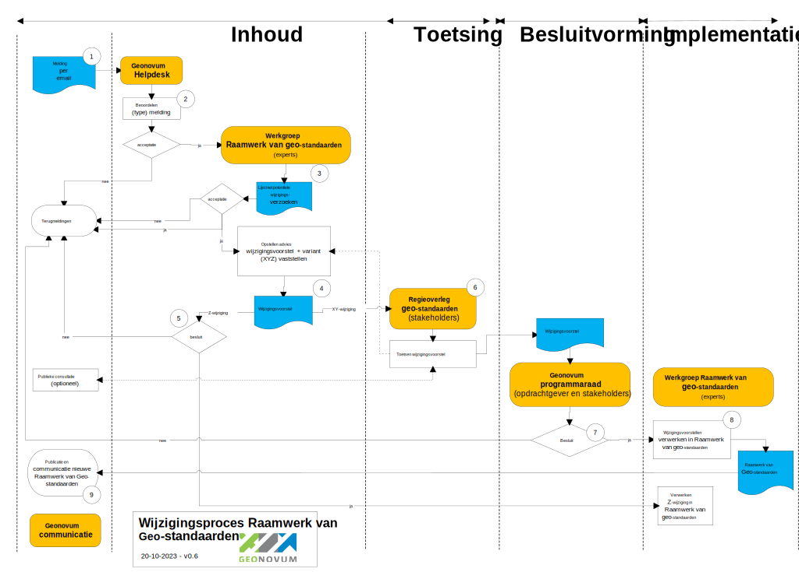

Het Raamwerk van geo-standaarden
is geschreven voor iedereen die geodatasets vastlegt, uitwisselt en beheert en voor iedereen die
(geo-)informatiebeleid maakt. Het doel van het Raamwerk van geo-standaarden is om
uit de grote verscheidenheid aan standaarden de juiste set te kiezen: die standaarden
die nodig zijn om geodata vindbaar, toegankelijk, uitwisselbaar en herbruikbaar te
maken. Wij baseren de keuzes voor standaarden in het Raamwerk op de volgende uitgangspunten:
internationale aansluiting, volwassenheid en openheid van deze geo-standaarden en
brede adoptie en gebruik. Het toepassen van de in dit Raamwerk opgenomen geo-standaarden,
draagt bij aan een solide geo-informatie infrastructuur, in lijn met internationale
ontwikkelingen en aansluitend op de nationale digitale overheid.
Gebruikers, die in de praktijk werken met geo-standaarden hebben vragen over de toepassing
ervan, willen weten welke geo-standaarden van toepassing zijn, welke versies actueel
zijn en welke ontwikkelingen spelen, en hebben mogelijk suggesties voor aanpassingen
van geo-standaarden. Aanpassingen of wijzigingen in het de geo-standaarden worden
niet zomaar doorgevoerd; voor de ene gebruiker zal de wijziging gering zijn, voor
de ander kan het grote gevolgen hebben. Dit wijzigingsprotocol voor het Raamwerk van
geo-standaarden geeft inzicht in het wijzigingsproces van het Raamwerk, evenals de
belangrijkste taken en verantwoordelijkheden van de betrokkenen (stakeholders) bij
het onderhouden en gebruiken van het Raamwerk van geo-standaarden. De stakeholders
worden op diverse momenten betrokken in dit proces.
Status van dit document
Dit is de definitieve versie van dit document. Wijzigingen naar aanleiding van consultaties zijn doorgevoerd.
Conformiteit
Naast onderdelen die als niet normatief gemarkeerd zijn, zijn ook alle diagrammen, voorbeelden, en noten in dit document niet normatief. Verder is alles in dit document normatief.
1. Inleiding
Dit onderdeel is niet normatief
Het Raamwerk van geo-standaarden is geschreven voor iedereen die geodatasets vastlegt, uitwisselt en beheert en voor iedereen die informatiebeleid maakt. Het doel van het Raamwerk van geo-standaarden is om uit de grote verscheidenheid aan standaarden de juiste set te kiezen: die standaarden die nodig zijn om geodata vindbaar, toegankelijk, uitwisselbaar en herbruikbaar te maken. Wij baseren de keuzes voor standaarden in het Raamwerk op de volgende uitgangspunten: internationale aansluiting, volwassenheid en openheid van deze geo-standaarden en brede adoptie en gebruik. Het toepassen van de in dit Raamwerk opgenomen geo-standaarden, draagt bij aan een solide geo-informatie infrastructuur, in lijn met internationale ontwikkelingen en aansluitend op de nationale digitale overheid.
Gebruikers, die in de praktijk werken met geo-standaarden hebben vragen over de toepassing ervan, willen weten welke geo-standaarden van toepassing zijn, welke versies actueel zijn en welke ontwikkelingen spelen, en hebben mogelijk suggesties voor aanpassingen van geo-standaarden. Aanpassingen of wijzigingen in het de geo-standaarden worden niet zomaar doorgevoerd; voor de ene gebruiker zal de wijziging gering zijn, voor de ander kan het grote gevolgen hebben. Vandaar dat dit wijzigingsprotocol inzicht geeft in het wijzigingsproces van het Raamwerk van geo-standaarden, evenals de belangrijkste taken en verantwoordelijkheden van de betrokkenen (stakeholders) bij het onderhouden en gebruiken van het Raamwerk van geo-standaarden. De stakeholders worden op diverse momenten betrokken in dit proces.
1.1 Waarom een wijzigingsprotocol
In dit wijzigingsprotocol staan de sturende principes achter het wijzigingsproces voor het Raamwerk van geo-standaarden; de manier waarop wijzigingen in het Raamwerk van geo-standaarden plaatsvinden in afstemming met de stakeholders en gebruikers. Met het protocol wordt elke wijziging van het Raamwerk een voorspelbaar en transparant proces voor bronhouders, beheerders, software leveranciers en gebruikers van het Raamwerk. In het protocol zijn basisbegrippen en uitgangspunten uiteengezet voor het wijzigingsproces, bijvoorbeeld wat onder nieuwe en volgende versies van het Raamwerk verstaan wordt en wanneer deze nieuwe versie(s) verwacht mogen worden. Tevens is een processchema uitgewerkt, dat invulling geeft aan de stappen die de stakeholders met elkaar doorlopen om tot een wijziging van het Raamwerk van geo-standaarden te komen.
1.2 Begrippen
Begrip
Uitleg
Raamwerk van geo-standaarden
In het Raamwerk van geo-standaarden zijn de geo-standaarden opgenomen die bijdragen aan een solide geo-informatie infrastructuur, onderverdeeld naar internationale, Europese en nationale afspraken en ontwikkelingen en aansluitend op de nationale digitale overheid. De geo-standaarden zijn onderverdeeld naar informatiemodellen, uitwisselformaten, API’s, visualisatie standaarden, metadata en standaarden voor coördinaat referentiesystemen.
GI-Beraad
Het GI-beraad doet aanbevelingen aan de minister van Binnenlandse Zaken, overige ministers en overheidsorganen over de strategische onderwerpen op het gebied van de geo-informatie in de publieke sector in Nederland. Het GI-beraad bestaat uit vertegenwoordigers van de verschillende gebruikersgroepen uit de publieke sector, zowel van het Rijk, de provincies, gemeenten en waterschappen.
Regie-overleg geo-standaarden
Het regie-overleg geo-standaarden heeft een adviserende rol bij het wijzigen van het Raamwerk. Het wijzigingsvoorstel wordt ter toetsing voorgelegd aan het regie-overleg geo-standaarden. Het regie-overleg geo-standaarden adviseert waarna het wijzigingsvoorstel, begeleid door het advies van het regie-overleg geo-standaarden naar de Programmaraad gaat. De Programmaraad besluit of de wijziging al dan niet wordt geaccepteerd. Dat leidt tot een nieuwe versie van het Raamwerk.
Programmaraad Geonovum
De Programmaraad Geonovum accordeert het Raamwerk van geo-standaarden en brengt advies uit aan het GI-beraad indien nodig. De Geonovum programmaraad bestaat uit vertegenwoordigers van de gebruikers en stakeholders van het Geonovum Standaardenprogramma en de beheerder van het Raamwerk.
Werkgroep Raamwerk van geo-standaarden
Een werkgroep bestaande uit enkele geo-standaarden experts, die het wijzigingsvoorstellen voor het Raamwerk van geo-standaarden voor informatiemodellen, uitwisselformaten, API’s, visualisatie, metadata coördinaat referentiesystemen voorbereiden en na accordering verwerken in het Raamwerk.
Standaardenprogramma overleg Geonovum
Het Standaardenprogramma overleg Geonovum bestaande uit adviseurs en deskundigen van Geonovum, die op innovaties en ontwikkelingen rondom geo-standaarden werken, die in het Raamwerk van geo-standaarden worden vastgelegd.
Wijzigingsprotocol
Hiermee wordt het geheel van vastgelegde regels en afspraken voor het wijzigen van Raamwerk van geo-standaarden vastgelegd.
Wijzigingsproces
Het wijzigingsproces is de daadwerkelijke wijziging van het het Raamwerk van geo-standaarden op een bepaald moment. Het volledige wijzigingsproces doorloopt de fasen van het wijzigingsprotocol met een datum van inwerkingtreding van de nieuwe versie van het Raamwerk.
Wijzigingsverzoek
Wijzigingsverzoeken zijn wensen voor aanpassing van het Raamwerk. Een wijzigingsverzoek doorloopt het wijzigingsproces en kan leiden tot een Wijzigingsvoorstel.
Wijzigingsvoorstel
In het wijzigingsproces worden meerdere wijzigingsverzoeken meegenomen en gebundeld tot één wijzigingsvoorstel voor het wijzigen van het Raamwerk van geo-standaarden.
2. Gebruik van het wijzigingsprotocol
Het wijzigingsprotocol schrijft een vast stramien voor het wijzigen van de het Raamwerk van geo-standaarden voor. Het protocol benoemt de fasen en de op te leveren resultaten. Belangrijk zijn de randvoorwaarden en uitgangspunten. De gebruikers, deskundigen (experts) en andere stakeholders van het Raamwerk van geo-standaarden worden bij het wijzigen van het Raamwerk van geo-standaarden nauw betrokken.
Het wijzigingsprotocol voor het Raamwerk van geo-standaarden geeft:
Inzicht in het behandel- en besluitproces dat ten grondslag ligt aan het versiebeheer;
Inzicht in de wijzigingsverzoeken;
Inzicht in een voorgestelde wijziging van het Raamwerk;
Stabiliteit aan het Raamwerk;
Continuïteit aan het Raamwerk;
Een eenduidige aanpak.
2.1 Releasebeleid
2.1.1 Nieuwe versie van het Raamwerk
Een release van een standaard is een nieuwe uitgave van het Raamwerk. De wijzigingen binnen een release wordt gedocumenteerd en vastgelegd in Bijlage A van het informatiemodel. De gebruiker kan zo nagaan op welke plaatsen de betreffen het Raamwerk gewijzigd is. De nieuwe release kenmerkt zich ten opzichte van de oude versie door een hoger versienummer. Bij de release is ieder product van het Raamwerk voorzien van een nieuw versienummer conform Semantic Versioning (SemVer). Binnen SemVer heeft elk product zijn eigen versienummer conform de X.Y.Z schrijfwijze, bijvoorbeeld versie 2.1.0 (=X.Y.Z):
X-wijziging. Indien het Raamwerk van geo-standaarden een majeure update krijgt met relatief veel nieuwe en ingrijpende wijzigingen dan wordt het Raamwerk als geheel aangeduid met een X wijziging. Frequentie: op voorstel van Geonovum en in overleg met het Regie-overleg geo-standaarden.
Y-wijziging. Indien het Raamwerk van geo-standaarden een beperkte update krijgt met een relatief klien aantal en minder ingrijpende wijzigingen dan wordt het Raamwerk als geheel aangeduid met een Y wijziging.
Frequentie: op voorstel van Geonovum en in overleg met het Regie-overleg geo-standaarden.
Z-wijziging. Dit zijn bugs/fouten of aanvullingen in een toelichting, die geen impact hebben op de geo-standaarden en hun versie aanduiding.
Frequentie: zo spoedig mogelijk na constatering door Geonovum.
Na het uitbrengen van een nieuwe versie van een standaard is deze nieuwe versie beschikbaar en vindbaar via de Geonovum website, onderdeel samenhang geo-standaarden op de pagina standaardisatie.
2.1.2 Oudere versie van het Raamwerk
De SemVer-methodiek schrijft backwards compatibility voor op het Y-niveau. Een nieuwe versie dwingt daarmee geen directe overstap af bij de gebruikers, tenzij anders (bijvoorbeeld wettelijk) bepaald. Na het uitbrengen van de nieuwe versie van het Raamwerk wordt de ontwikkeling van de oude versie stop gezet.
Voor het onderhoud en de ondersteuning van een oude versie van een standaard gelden de volgende uitgangspunten:
Aan een oude versie worden geen nieuwe features toegevoegd, geen aanpassingen gedaan na het uitbrengen van een nieuwe versie. Verzoeken om aanpassing en wijziging voor nieuwe functionaliteit worden niet meer voor het oude Raamwerk in behandeling genomen. Correcties (Z-wijzigingen) worden wel uitgevoerd op de vorige versies zolang deze nog ondersteund worden.
Bij oplevering van een nieuwe versie wordt de voorgaande versie nog een van te voren vastgestelde periode ondersteund. De duur van de overgangsperiode wordt mede bepaald door de omvang van de wijzigingen (X, Y en Z wijzigingen op de vorige versies), de staat van ontwikkeling van het Raamwerk, en of het Raamwerk in voorlopig dan wel permanent beheer is.
In paragraaf releasebeleid zijn de X, Y en Z wijzigingen uitgelegd. Wijzigingen kennen drie procesvarianten: eén voor X wijzigingen, één voor Y wijzigingen en één voor Z wijzigingen.
De start van het proces is voor alle varianten hetzelfde. Op de website wordt een wijzigingsverzoek ingediend bij de Helpdesk geo-standaarden. De impact van deze wijziging wordt door de Werkgroep Raamwerk van geo-standaarden beoordeeld. Deze eerste impactanalyse beoordeelt tot welke SemVer categorie de wijziging hoort en wat de effecten van de wijziging zijn. Naast de impactanalyse wordt het wijzigingsverzoek .
Proces voor X en Y wijzigingen
X en Y wijzigingen vergen volledige afstemming en het doorlopen van alle in paragraaf 5.1 beschreven fasen: Inhoud, Toetsing, Besluitvorming en Implementatie. Voor de inhoudelijke fase wordt een werkgroep gestart met daarin deskundigen (experts). Het resultaat van de werkgroep is een wijzigingsvoorstel dat in het standaardenoverleg van Geonovum en in het overleg van de Regiegroep geo-standaarden met externe stakeholders wordt besproken. Y en X wijzigingen worden altijd voorgelegd aan de Programmaraad Geonovum, die stelt een nieuwe versie van de Raamwerk van geo-standaarden vast.
Proces voor Z wijzigingen
In overleg met de Werkgroep Raamwerk van geo-standaarden worden Z wijzigingen in de volgende release opgenomen. De inhoudelijke fase wordt door het beheer van het Raamwerk uitgevoerd. Besluitvorming vindt plaats in afstemming met de Werkgroep. Implementatie vindt plaats door het publiceren van de wijziging op de Geonovum website.
2.3 Betrokkenen
De volgende betrokkenen spelen een rol in het wijzigingsproces van het Raamwerk van geo-standaarden:
Rol
Stakeholder
Opdrachtgever (eigenaar) van het Raamwerk van geo-standaarden
Programmaraad van Geonovum bestaande uit vertegenwoordigers van Kadaster, Ministerie van EZK en Ministerie van LNV, Provincie Gelderland namens de provincies en het Interprovinciaal Overleg (IPO), Ministerie van Defensie - Dienst der Hydrografie, Rijkswaterstaat, Ministerie van BZK, Geologische Dienst Nederland TNO, Vereniging van Nederlandse Gemeenten.
Regie-overleg geo-standaarden
Het Regie-overleg heeft een diverse samenstelling van beheerders, gebruikersvertegenwoordigers en liaison met relevante standaarden organisaties. Het adviseert de Programmaraad, werkt in werkgroepen, agendeert binnen domeinstandaarden en informeert het programma Zicht op Nederland Datafundament.
Werkgroep Raamwerk van geo-standaarden
Adviseurs en experts geo-standaarden Geonovum
Helpdesk geo-standaarden
Adviseurs en experts geo-standaarden Geonovum
3. Wijzigingsproces
De aanleiding voor een wijzigingsproces is gebaseerd op meldingen over de wensen en gevonden fouten in het Raamwerk van geo-standaarden. Dit zijn de wijzigingsverzoeken. Deze verzoeken worden door de Helpdesk geo-standaarden in behandeling genomen en in samenwerking met de werkgroep Raamwerk van geo-standaarden verwerkt tot een wijzigingsvoorstel voor het Raamwerk. De beheerder neemt het initiatief om een wijzigingsproces te starten, de stappen in het proces zijn conform dit wijzigingsprotocol.
3.1 Fasen in het wijzigingsproces
Het volledige wijzigingsproces doorloopt de fasen Inhoud, Toetsing, Besluitvorming en Implementatie, zoals weergegeven in figuur 1.
Inhoud
In de fase inhoud wordt voor ieder wijzigingsverzoek bepaald of deze wordt opgenomen in de nieuwe versie van het Raamwerk of niet. Dit wordt door de Helpdesk geo-standaarden intern vastgelegd. Ieder wijzigingsverzoek dat wordt meegenomen in de nieuwe versie van het Raamwerk, wordt een impactanalyse uitgevoerd. Met deze impactanalyse beoordeelt ook tot welke SemVer categorie de wijziging hoort, of de geo-standaard voldoet aan de criteria om in het Raamwerk te worden opgenomen en evt. welke betrokken partijen geraakt worden door de wijziging en wat de secundaire effecten van de wijziging zijn.
Wanneer tijdens de eerste impactanalyse is vastgesteld dat het om een X of Y wijziging gaat, wordt de Werkgroep geo-standaarden ingepland met de deskundigen. Afhankelijk van de omvang van de wijziging ten opzichte van de voorgaande versie en afhankelijk van welke stakeholders geraakt worden door de wijziging, verandert de samenstelling van de werkgroep. De werkgroep wordt vooraf geïnformeerd over het wijzigingsvoorstel en indien mogelijk wordt een eerste probleemschets en oplossing aangedragen voorafgaand aan de werkgroep. De resultaten van de werkgroep worden in een wijzigingsvoorstel voorgelegd aan de het Regieoverleg geo-standaarden met daarin een breder groep van stakeholders.
Toetsing
De fase Toetsing vormt een brug tussen de inhoud en besluitvorming. In deze fase wordt voor een X of Y wijziging door het Regieoverleg geo-standaarden het wijzigingsvoorstel getoetst en van een advies voorzien voor besluitvorming in de Programmaraad. Met deze consultatie vragen wij de gebruikers en stakeholders van het Raamwerk actief hun reactie te geven op het wijzigingsvoorstel. Het wijzigingsvoorstel inclusief de terugkoppeling uit een evt. publieke consultatie wordt verwerkt in het wijzigingsvoorstel voor de besluitvorming van het Raamwerk van geo-standaarden.
Besluitvorming
Bij Besluitvorming wordt besloten om de gewijzigde vast te stellen en te publiceren. Afhankelijk van het type wijzigingsvoorstel (X, Y of Z, zie paragraaf proces varianten), besluit de Programmaraad van Geonovum voor X en Y wijzigingen en de Werkgroep geo-standaarden voor de Z wijzigingen.
Implementatie
Het verwerken van het wijzigingsvoorstel in het Raamwerk van geo-standaarden staat centraal in deze fase. Dit wordt gedaan door de Werkgroep geo-standaarden.
3.2 Het wijzigingsproces in detail
De meldingen en wijzigingsverzoeken alsook (inter)nationale ontwikkelingen geven aanleiding tot de verdere ontwikkeling voor een standaard. Het wijzigingsproces dat dit wijzigingsvoorstel doorloopt bestaat uit tien stappen, die in onderstaande figuur 2 in onderlinge samenhang zijn weergegeven. In deze figuur zijn processen, besluiten en de relevante actoren en actorgroepen en hun interacties opgenomen. Iedere processtap is vervolgens kort beschreven.
Figuur 2Processchema wijzigingsbeheer Raamwerk van geo-standaarden
Processtappen
De volgende processtappen worden doorlopen om te komen tot wijzigingen in de Raamwerk van geo-standaarden.
Met een ‘melding’ begint het wijzigingsproces. Doorgaans zal de gebruiker van een geo-standaard een eis of wens indienen, maar het kan ook het functioneel of technisch beheer zijn in sommige gevallen (bijv. wanneer een onderliggende standaard is bijgesteld). Er zijn meerdere aanleidingen, doorontwikkelingen of signalen, die kunnen leiden tot het indienen van een wijzigingsverzoek. Eisen en wensen, die kunnen leiden tot wijzigingen in het Raamwerk van geo-standaarden kunnen ontstaan ten gevolge van de volgende aanleidingen, doorontwikkelingen of signalen:
Aanpassing van business doelen van de opdrachtgever;
Nieuwe of aangepaste wetgeving;
Aanpassing van aspecten van (onderliggende) standaarden;
Gewijzigde gebruikerswensen;
Wijzigingen in technische voorzieningen;
Wijzigingen in systemen waar mee gekoppeld wordt;
Het herstellen van fouten/bugs;
Het voor zijn van het optreden van fouten (preventief).
De bovengenoemde aanleidingen kunnen leiden tot wijzigingsverzoeken in het Raamwerk van geo-standaarden, waarmee het wijzigingsproces in gang kan worden gezet. In het algemeen worden drie typen meldingen onderscheiden:
Een wijzigingsverzoek n.a.v. het adopteren van een nieuwe geo-standaard;
Een wijzigingsverzoek n.a.v. een (versie) update van een bestaande geo-standaard;
Het afvoeren van een niet meer relevante geo-standaard. De melding kan per mail gestuurd aan de Helpdesk geo-standaarden. Bij het aanmelden van meerdere wijzigingsverzoeken, geldt dat voor elk wijzigingsverzoek een aparte mail gestuurd moet worden.
De Helpdesk geo-standaarden registreert het wijzigingsverzoek in het meldingen systeem. De helpdesk beoordeelt het wijzigingsverzoek. De helpdesk is de actiehouder van de melding en controleert of de melding volledig en helder is. Bij een fout onderzoekt de helpdesk of dit inderdaad het geval is. Ook kan de helpdesk verder informatie opvragen bij de indiener van de melding. Ook wordt gecontroleerd of de melding geen duplicaat van een reeds ingevoerde melding. Indien de melding helder is beschreven, en het betreft een wens voor het aanpassen van de geo-standaard of een gevonden fout, dan kan melding worden erkend en wordt de melding formeel opgenomen in het meldingen systeem op Github. Indien de melding niet erkend wordt, zal de helpdesk via de mail contact opnemen met de indiener om de melding verder af te stemmen.
De binnengekomen meldingen wordt besproken in de Werkgroep Raamwerk van geo-standaarden, het overleg met geo-standaarden experts van Geonovum. De Werkgroep stelt op basis van de binnengekomen helpdesk meldingen jaarlijks een lijst met potentiële wijzigingsverzoeken op. Tevens wordt in deze stap door de Werkgroep een eerste impactanalyse uitgevoerd voor de wijzigingsverzoeken. De impactanalyse betreft de impact van de wijziging van de standaard op de gebruikers en de door hen gebruikte software. De resultaten van de impactanalyse worden gecommuniceerd op Github. Indien een melding wordt afgewezen – dus niet in de lijst met wijzigingsverzoeken wordt opgenomen – wordt door de Werkgroep een bericht met de verklaring van de afwijzing van de melding aan de indiener gestuurd.
De Werkgroep levert een wijzigingsvoorstel voor een nieuwe versie van het Raamwerk van geo-standaarden op voor het Regieoverleg geo-standaarden in geval van een X of Y-wijziging.
Indien het wijzigingsvoorstel enkel Z-wijziging(en) betreft, neemt de Werkgroep Raamwerk van geo-standaarden een besluit en gaat (al dan niet) over tot implementatie van de Z-wijziging. Het Regieoverleg geo-standaarden wordt over de wijziging geïnformeerd.
Het Regieoverleg geo-standaarden toetst het wijzigingsvoorstel voor de X of Y wijziging. In het Regieoverleg geo-standaarden hebben gebruikers en belangrijke stakeholders zitting. Indien nodig geacht door het Regieoverleg geo-standaarden, wordt in geval van een X-wijziging het wijzigingsvoorstel één maand ter publieke consultatie aangeboden op de website. Dit is optioneel. De resultaten van de optionele publieke consultatie worden daarna getoetst door het Regieoverleg geo-standaarden. Indien het Regieoverleg geo-standaarden instemt met het wijzigingsvoorstel, wordt het wijzigingsvoorstel met een positief advies aan de Programmaraad Geonovum gestuurd. In geval het Regieoverleg geo-standaarden het voorstel nog niet van een positief advies kan voorzien en eerst wijzigingen wil doorvoeren en het wijzigingsvoorstel wil laten bijstellen dan wel de impactanalyse wil bijstellen, dan gaat het voorstel terug naar de Werkgroep. De Werkgroep stelt vervolgens het wijzigingsvoorstel bij en brengt het wijzigingsvoorstel opnieuw in bij het Regieoverleg geo-standaarden. Na toetsing wordt een advies gestuurd aan Programmaraad Geonovum voor een besluit.
De Programmaraad Geonovum stelt het wijzigingsvoorstel van het Raamwerk van geo-standaarden vast.
Indien de Programmaraad Geonovum akkoord is met het wijzigingsvoorstel, wordt het wijzigingsvoorstel verwerkt in het Raamwerk van geo-standaarden door de Werkgroep. Indien het besluit tot implementatie negatief is, wordt terugmelding gemaakt aan de gebruikers en stakeholders en op de website.
Na afronding van wijzigingsproces vindt communicatie plaats over de wijziging van het Raamwerk van geo-standaarden door Geonovum Communicatie via de website van Geonovum.
4. Implementatie ondersteuning
Het in gebruik nemen van (een nieuwe versie van) het Raamwerk van geo-standaarden staat centraal in deze fase. Tijdens de implementatie ondersteuning worden desgewenst verschillende activiteiten uitgevoerd worden:
Het verzorgen van een opleiding en/of advies over het gebruik (optioneel);
De communicatie.
4.1 Opleiding en advies
Opleiding en advies kunnen van toegevoegde waarde zijn voor implementatie ondersteuning van de gebruikers van het Raamwerk van geo-standaarden. Middelen als documentatie, bijeenkomsten en workshops worden ingezet om de kennis over de wijzigingen in nieuwe Raamwerk te delen en te ondersteunen bij de implementatie. Ook publicaties in vakbladen kunnen worden ingezet ter ondersteuning.
4.2 Communicatie
Het hele wijzigingsproces staat of valt met een goede communicatie. Onder goede communicatie wordt verstaan het tijdig leveren van de juiste informatie aan de juiste belanghebbenden. Dit betreft de proceskant alsook de producten die er worden opgeleverd.
Wijzigingen in het Raamwerk van geo-standaarden worden bekendgemaakt in de geo-standaarden nieuwsbrief van Geonovum.
Publieke consultatie
Bij X en Y-wijzigingen wordt in sommige gevallen een publieke consultatie in het wijzigingsproces gehouden. De wijzigingen in het Raamwerk wordt dan voor een bepaalde, afgesproken periode voor gelegd ter commentaar aan alle belanghebbenden en geïnteresseerden door middel van een publieke consultatie via de Geonovum website en de nieuwsbrief geo-standaarden van Geonovum.
5. Escalatieprocedure en klachtenafhandeling
In voorgaande hoofdstukken gaat het protocol ervan uit dat wijzigingen 'in vrijheid' worden doorgevoerd. In het beheerproces wordt geen rekening gehouden met noodzakelijke wijzigingen, die met spoed of onder druk van bijvoorbeeld (externe) nieuwe wet- en regelgeving moeten worden doorgevoerd. Hiervoor bestaat een escalatieprocedure. Daarnaast kunnen ook klachten ingediend worden over het beheerproces en zijn afspraken gemaakt over de klachtenafhandeling.
5.1 Escalatieprocedure
Er is sprake van een escalatieprocedure als er een wijziging noodzakelijk is die niet in het reguliere wijzigingsproces doorgevoerd kan worden, omdat dit naar verwachting en inschatting te lang duurt. Een uitputtende lijst met situaties en criteria wanneer escalatie van toepassing is, valt op voorhand niet te geven. Maar voor de beeldvorming: het gaat om situaties waarbij het niet doorvoeren van een bepaalde noodzakelijke wijziging leidt tot onaanvaardbare risico's voor het werkveld of het onmogelijk uitvoeren (vanwege bijvoorbeeld tegenstrijdige wetten) van werkzaamheden.
De escalatieprocedure wordt niet gebruikt om reguliere wijzigingen sneller door te kunnen voeren. Er is geen vastgelegd proces om de escalatieprocedure te doorlopen, omdat verschillende situaties van escalatie wellicht tot een verschillende wijze van handelen moeten leiden. In plaats daarvan zijn onderstaande sturende principes leidend om verantwoordelijkheden te duiden.
Signalering
Uit het werkveld kunnen signalen ontstaan dat met spoed een wijziging doorgevoerd zou moeten worden. Het is vooraf niet aan te geven uit welke kanalen deze geluiden zullen ontstaan. Het is wel van belang om de rol van Geonovum te onderkennen als antennefunctie voor het werkveld. In ieder geval zullen deze signalen op enig moment de opdrachtgever of Geonovum bereiken, en op dat moment zal er overleg gevoerd worden over deze signalen.
Overleg
Bij de besluitvorming binnen de escalatieprocedure wordt er in principe overleg gevoerd tussen de opdrachtgever voor het beheer van de betreffende standaard en Geonovum. Beide partijen raadplegen de betrokkenen daar waar nodig.
Besluitvorming
De beoordeling of de escalatieprocedure van toepassing is, wordt genomen door de trekker van het Basisprogramma, dan wel de contactpersoon bij de Programmaraad. Ook het besluit welke wijzigingen er precies doorgevoerd moeten worden en op welke manier, wordt genomen door dezelfde persoon.
Coördinatie
De coördinatie tijdens de escalatieprocedure wordt uitgevoerd door de trekker van het Basisprogramma, dan wel de contactpersoon bij de Programmaraad.
Communicatie met het werkveld
De communicatie met het werkveld wordt uitgevoerd door Geonovum. Als beheerder van het Raamwerk wordt verwacht dat Geonovum het meest directe contacten heeft met het werkveld.
5.2 Klachtenafhandeling
Het garanderen van het serieus nemen van klachten kan alleen door deze volgens een zorgvuldige procedure te behandelen. Klachten kunnen ook beschouwd worden als verbetersuggestie. Twee verschillende typen klachten met betrekking tot het Raamwerk van geo-standaarden worden onderscheiden:
Klachten over de toepassingsmogelijkheid van het Raamwerk;
Klachten over het beheer van het Raamwerk.
In het eerste geval is het feitelijk geen klacht maar een wens of eis tot het aanpassen van het Raamwerk. Het beheer van de betreffen het Raamwerk neemt de klacht in behandeling en neemt de klacht op als wijzigingsverzoek en niet als klacht. In dit geval doet Geonovum haar werk goed.
In het tweede geval is er sprake van ontevredenheid over de uitvoering van het beheerproces van het Raamwerk en betreft de klacht niet de inhoud, maar het Raamwerk zelf. De indiener is van mening dat Geonovum, dan wel de werkgroep het werk niet naar behoren uitvoert. In dat geval wordt de klacht doorgezet naar de Programmaraad.
Het indienen van klachten loopt in principe via de Helpdesk geo-standaarden.